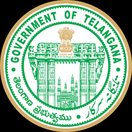

telangana academy for skills and knowledge
department of ITE&C,government of telangana


Technology Entrepreneurship Program
Total Enrollment till date: 2157
Taking a step ahead from engineering...
Technology Entrepreneurship Programme (TEP) is a semi-virtual programme offered by the Indian School of Business(ISB) in partnership with Telangana Academy for Skill and Knowledge (TASK).
The program is tailored specifically to motivate and generate interest in entrepreneurship among 2nd-year 2nd-semester engineering students.
TEP aims to foster entrepreneurship by guiding engineering students in creating technology-enabled products and services. Additionally, the programme helps improve their communication,
teamwork and problem-solving and decision-making abilities
TEP has three primary goals at its core:
To promote technology entrepreneurship as a viable career option and nurture the culture of entrepreneurship in the region.
Link entrepreneurial and innovative behaviour to educational and career pathways.
To provide an environment/experience for engineering students to create investable technology-based start-ups.
e an environment/experience for engineering students to create investable technology-based start-ups.
The components of TEP can be broadly categorized into three areas:
Core Courses:
Online modules that cover topics on Product and Service Design, Innovation Management and Entrepreneurship.
Practicum:
Hands on activity-based learning through Human Centric Design Thinking Workshop, Engineering Design Challenge, Mentor workshops/boot-camps and industry visits.
Build Your Own Venture:
A series of boot-camps and mentor clinics are conducted to assist students to build their own venture. Additionally, classroom sessions on topics like marketing strategy, negotiations and the management related topics, are held to prepare students be pitch ready for Demo Day with prospective investors.